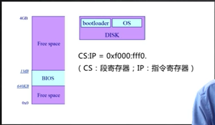
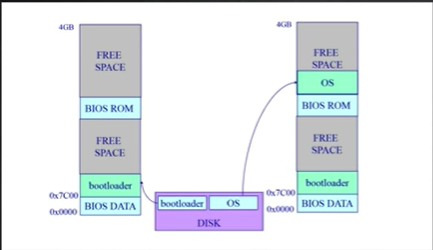
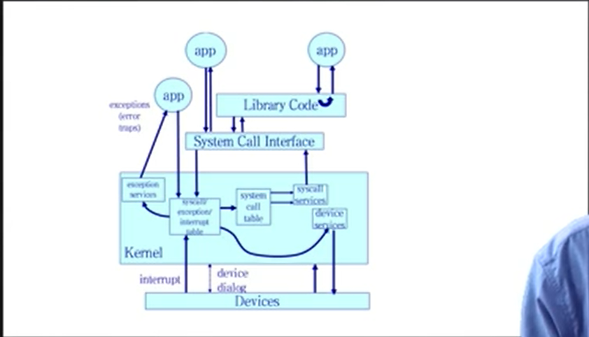

| 创建时间： | 2020/1/17 20:36 |
| 更新时间： | 2020/1/18 22:58 |
| 作者： | lzr |
计算机启动后，最基本的三个部分
cpu ,内存, ioos存放于disk中BIOS：检查外设，加载相应的软件Bootloader
：加载OS

（BIOS）检查显卡驱动，键盘鼠标，（初始化检查）
Bootloader 一般放在硬盘的第一个主引导扇区Bootloader 再将OS加载到内存中
例：在x86中，bootloader将会被放在内存中的0x7c00连续向上512个字节
（如图所示）

Bootloader 将操作系统的代码和数据从磁盘加载到内存中
将cpu的控制权交给OS，实际上是跳转到操作系统的起始地址
应用程序主动向操作系统发出服务请求
非法指令或其他坏的处理状态（如 内存出错）
来自不同的硬件设备的计时器和网络的中断
操作系统是一个特殊的软件，他和应用程序最大的不同在于拥有对整个计算机系统的控制权，是一个可信任的软件。应用程序不可信任，操作系统可以提供一个安全的服务。应用程序直接访问外设，很容易造成整个计算机系统的崩溃
可以使得上层应用不需要关心底下这些外设的不同的细节，来针对不同的外设实现不一样的细节，这样会开发效率非常低。操作系统可以屏蔽底层外设的复杂性和差异性，给上层提供一个很简单的接口，让应用程序可以更加通用和可移植
